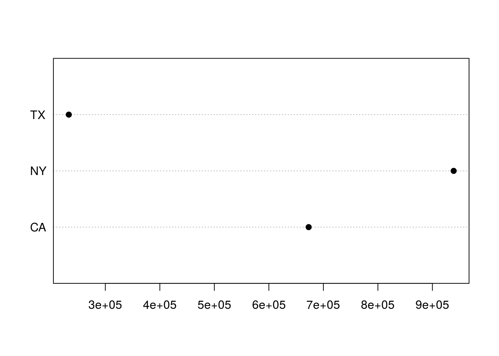
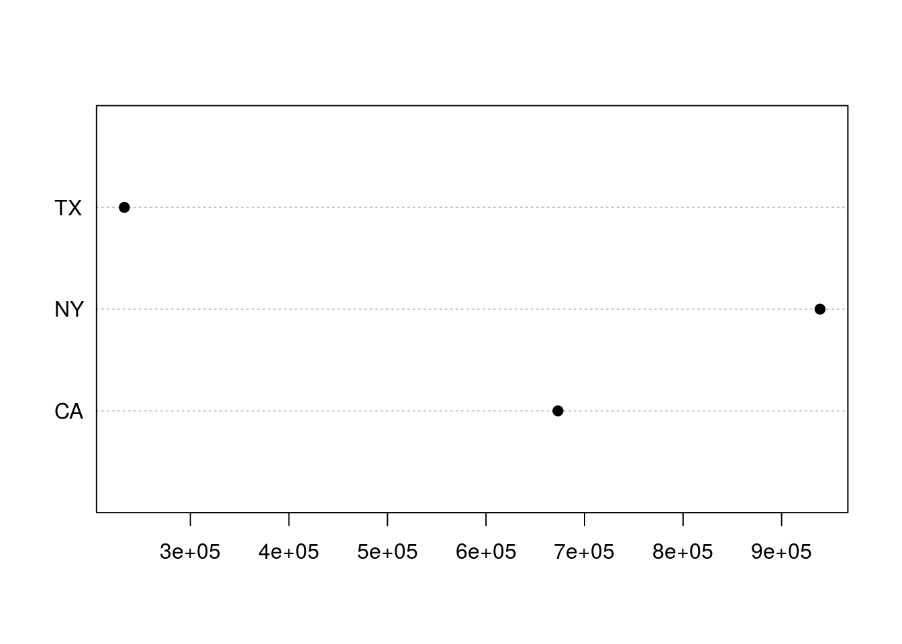

Chapter 7 Data Frames
Finally! This
By the end of this chapter you will know:
- What’s a data frame and how do I create one?
- How do I read and write external data?
7.1 What’s a data frame?
All of that about vectors and lists was prologue to this. The data frame is a seminal concept in R. Most statistical operations expect one and they are the most common way to pass data in and out of R.
Although critical to understand, this is very, very easy to get. What’s a data frame? It’s a table. That’s it. No, really, that’s it.
A data frame is a list of vectors. Each vector may have a different data type, but all must be the same length.
7.1.1 Creating a data frame
set.seed(1234)
State = rep(c("TX", "NY", "CA"), 10)
EarnedPremium = rlnorm(length(State), meanlog = log(50000), sdlog=1)
EarnedPremium = round(EarnedPremium, -3)
Losses = EarnedPremium * runif(length(EarnedPremium), min=0.4, max = 0.9)
df = data.frame(State, EarnedPremium, Losses, stringsAsFactors=FALSE)7.1.2 Basic properties of a data frame
summary(df)## State EarnedPremium Losses
## Length:30 Min. : 5000 Min. : 2034
## Class :character 1st Qu.: 21250 1st Qu.: 12461
## Mode :character Median : 30500 Median : 17363
## Mean : 61500 Mean : 39006
## 3rd Qu.: 63750 3rd Qu.: 41465
## Max. :560000 Max. :411179str(df)## 'data.frame': 30 obs. of 3 variables:
## $ State : chr "TX" "NY" "CA" "TX" ...
## $ EarnedPremium: num 15000 66000 148000 5000 77000 83000 28000 29000 28000 21000 ...
## $ Losses : num 12486 27781 82671 2034 40002 ...names(df)## [1] "State" "EarnedPremium" "Losses"colnames(df)## [1] "State" "EarnedPremium" "Losses"length(df)## [1] 3dim(df)## [1] 30 3nrow(df)## [1] 30ncol(df)## [1] 3head(df)## State EarnedPremium Losses
## 1 TX 15000 12486.254
## 2 NY 66000 27781.290
## 3 CA 148000 82671.479
## 4 TX 5000 2034.375
## 5 NY 77000 40002.490
## 6 CA 83000 62519.527head(df, 2)## State EarnedPremium Losses
## 1 TX 15000 12486.25
## 2 NY 66000 27781.29tail(df)## State EarnedPremium Losses
## 25 TX 25000 12452.183
## 26 NY 12000 10191.483
## 27 CA 89000 52932.740
## 28 TX 18000 9997.837
## 29 NY 49000 23520.702
## 30 CA 20000 16961.8587.1.3 Referencing
Very similar to referencing a 2D matrix.
df[2,3]
df[2]
df[2,]
df[2, -1]Note the $ operator to access named columns. A data frame uses the ‘name’ metadata in the same way as a list.
df$EarnedPremium
# Columns of a data frame may be treated as vectors
df$EarnedPremium[3]
df[2:4, 1:2]
df[, "EarnedPremium"]
df[, c("EarnedPremium", "State")]7.1.4 Ordering
order(df$EarnedPremium)## [1] 4 26 1 12 28 18 30 10 19 13 25 7 9 8 17 11 22 23 16 29 14 21 2
## [24] 5 24 6 27 15 3 20df = df[order(df$EarnedPremium), ]7.1.5 Altering and adding columns
df$LossRatio = df$EarnedPremium / df$Losses
df$LossRatio = 1 / df$LossRatio7.1.6 Eliminating columns
df$LossRatio = NULL
df = df[, 1:2]7.1.7 rbind, cbind
rbind will append rows to the data frame. New rows must have the same number of columns and data types. cbind must have the same number of rows as the data frame.
dfA = df[1:10,]
dfB = df[11:20, ]
rbind(dfA, dfB)
dfC = dfA[, 1:2]
cbind(dfA, dfC)7.1.8 Merging
dfRateChange = data.frame(State =c("TX", "CA", "NY"), RateChange = c(.05, -.1, .2))
df = merge(df, dfRateChange)Merging is VLOOKUP on steroids. Basically equivalent to a JOIN in SQL.
7.1.9 Altering column names
df$LossRation = with(df, Losses / EarnedPremium)
names(df)## [1] "State" "EarnedPremium" "RateChange" "LossRation"colnames(df)[4] = "Loss Ratio"
colnames(df)## [1] "State" "EarnedPremium" "RateChange" "Loss Ratio"7.1.10 Subsetting - The easy way
dfTX = subset(df, State == "TX")
dfBigPolicies = subset(df, EarnedPremium >= 50000)7.1.11 Subsetting - The hard(ish) way
dfTX = df[df$State == "TX", ]
dfBigPolicies = df[df$EarnedPremium >= 50000, ]7.1.12 Subsetting - Yet another way
whichState = df$State == "TX"
dfTX = df[whichState, ]
whichEP = df$EarnedPremium >= 50000
dfBigPolicies = df[whichEP, ]I use each of these three methods routinely. They’re all good.
7.2 Summarizing
sum(df$EarnedPremium)## [1] 1845000sum(df$EarnedPremium[df$State == "TX"])## [1] 233000aggregate(df[,-1], list(df$State), sum)## Group.1 EarnedPremium RateChange Loss Ratio
## 1 CA 673000 -1.0 8.257125
## 2 NY 939000 2.0 11.755127
## 3 TX 233000 0.5 18.7457917.2.1 Summarizing visually - 1
dfByState = aggregate(df$EarnedPremium, list(df$State), sum)
colnames(dfByState) = c("State", "EarnedPremium")
barplot(dfByState$EarnedPremium, names.arg=dfByState$State, col="blue")
7.2.2 Summarizing visually - 2
dotchart(dfByState$EarnedPremium, dfByState$State, pch=19)
7.2.3 Advanced data frame tools
- dplyr
- tidyr
- reshape2
- data.table
Roughly 90% of your work in R will involve manipulation of data frames. There are truckloads of packages designed to make manipulation of data frames easier. Take your time getting to learn these tools. They’re all powerful, but they’re all a little different. I’d suggest learning the functions in base R first, then moving on to tools like dplyr and data.table. There’s a lot to be gained from understanding the problems those packages were created to solve.
7.2.4 Reading data
myData = read.csv("SomeFile.csv")7.2.5 Reading from Excel
Actually there are several ways: * XLConnect * xlsx * Excelsi-r
library(XLConnect)
wbk = loadWorkbook("myWorkbook.xlsx")
df = readWorksheet(wbk, someSheet)7.2.6 Reading from the web - 1
URL = "http://www.casact.org/research/reserve_data/ppauto_pos.csv"
df = read.csv(URL, stringsAsFactors = FALSE)7.2.7 Reading from the web - 2
library(XML)
URL = "http://www.pro-football-reference.com/teams/nyj/2012_games.htm"
games = readHTMLTable(URL, stringsAsFactors = FALSE)7.2.8 Reading from a database
library(RODBC)
myChannel = odbcConnect(dsn = "MyDSN_Name")
df = sqlQuery(myChannel, "SELECT stuff FROM myTable")7.2.9 Read some data
df = read.csv("../data-raw/StateData.csv")View(df)7.2.10 Questions
- Load the data from “StateData.csv” into a data frame.
- Which state has the most premium?